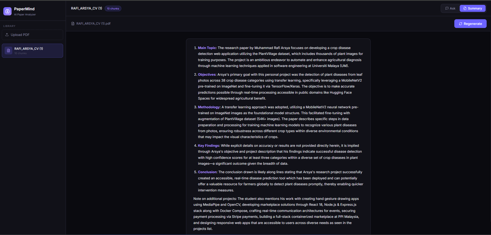

PaperMind — Local RAG Paper Analyzer
I built an AI that reads, understands, and answers questions about research papers — running entirely on my own hardware, with zero cloud dependency.
Reading research papers is hard. A single paper can be 30+ pages of dense academic language, packed with methodology sections, statistical findings, and domain-specific terminology. For students — especially those not in the paper's field — it takes hours just to extract the core ideas.
Tools like ChatGPT can help, but they have a fundamental problem: they hallucinate. Ask ChatGPT about a specific paper it hasn't seen, and it will confidently invent details. It doesn't actually read your document — it guesses based on patterns from its training data.
That's the problem PaperMind solves. It's not a general-purpose AI. It's an AI that is grounded to your document — it can only answer based on what it actually reads from your PDF.
Research papers often contain sensitive or unpublished work. Uploading them to a third-party API — OpenAI, Anthropic, Google — means your data leaves your machine and goes through someone else's servers.
PaperMind runs entirely locally. The LLM runs on my own Linux mini PC. The vector database lives on my own disk. No paper you upload ever leaves your network.
Upload any academic PDF, then:
This is what a real conversation with PaperMind looks like — asking questions about my own CV PDF:
Frontend: HTML5, CSS3, JavaScript (ES6+), TypeScript, React, Next.js, Tailwind CSS, Zustand, TanStack React Query
Backend: Node.js, Express.js, Python, Java, REST APIs, PostgreSQL, MySQL, Redis, Socket.IO, Sequelize ORM
AI / ML: TensorFlow, Keras, PyTorch, NumPy, OpenCV, MediaPipe
Cloud & DevOps: AWS (AIF-C01 certified), Docker, Docker Compose, Bash, NGINX, Kiro, Git, GitHub, Ubuntu Linux
1. CampusBay — A full-stack containerized marketplace using React 18, Node.js, PostgreSQL, and Docker Compose with real-time Socket.IO chat and Stripe payments.
2. Crop Disease Detector — An image classification web app using MobileNetV2 transfer learning, deployed on Hugging Face Spaces.
3. HandGesture — A real-time hand gesture drawing app using MediaPipe and OpenCV, detecting 21 landmarks per hand.
• Head of Website Division — PPI Malaysia University Chapter (2025–Present)
• Head of Department — IDFEST Art Exhibition, Universiti Malaya (2026–Present)
• LARAS Transportation Team — Coordinated logistics for large-scale events (2026)
• LARAS Field Committee — On-ground field operations and team deployment (2026)
Every answer above came directly from the PDF — not from the model's training data. That's RAG in action.
Here's a real screen recording of PaperMind answering questions about an uploaded PDF in real time:
What is RAG?
Retrieval Augmented Generation — the technique that makes PaperMind actually read your document instead of guessing.
Imagine you have a brilliant friend who has read millions of books — but they haven't read your specific research paper. If you ask them about it, they'll give you a confident but made-up answer.
Now imagine you hand them your paper first, highlight the relevant sections, then ask your question. Suddenly, they're giving you accurate, grounded answers — because they're reading from the actual source.
ChatGPT answers from its training data — it doesn't actually read your PDF. RAG answers from your actual document content. The difference is critical for accuracy.
The Architecture
Five services, one Docker Compose file — how PaperMind's components connect.
Building It
The challenges, decisions, and problems I ran into while building PaperMind from scratch.
My mini PC is hosted on Universiti Malaya's campus network. The campus firewall blocks all outbound traffic on non-standard ports — including npm install, pip install, and Docker pulls.
This meant I couldn't install dependencies directly on the Linux server. My workaround:
By default, Ollama listens on 127.0.0.1:11434 — localhost only. Docker containers can't reach localhost of the host machine.
Also needed to allow UFW firewall to permit Docker's subnet to reach port 11434:
Mistral 7B on a CPU-only machine takes 2–5 minutes to generate a response. The default Nginx proxy timeout is 60 seconds — causing every request to fail with 504 Gateway Timeout.
Mistral 7B uses ~8GB RAM and takes 2–5 minutes per response on CPU-only hardware. For a portfolio demo, this is too slow.
I switched to Phi3 Mini — Microsoft's 2.2GB model that runs in 30–60 seconds on the same hardware, while still giving accurate, structured answers.
Self-Hosting
Why running AI on your own hardware is more impressive than paying for an API — and what I learned from it.
PaperMind runs on a Linux mini PC sitting on my desk at Kolej Kediaman Ke-13, Universiti Malaya. Everything — the React frontend, FastAPI backend, ChromaDB vector database, and Mistral LLM — runs on this single machine.
Most students build projects that call OpenAI's API — they pay per token, their data goes through external servers, and if OpenAI goes down, their app goes down.
PaperMind is different. The LLM lives on my disk. The vector database lives on my disk. Nothing leaves the machine. This demonstrates a different and more advanced skill set: infrastructure thinking.
The same mini PC also runs CampusBay — my peer-to-peer student marketplace with React, Node.js, PostgreSQL, Redis, Socket.IO, and Stripe. Both stacks coexist on the same machine via Docker Compose with careful port management.
One click generates a full structured summary of the paper — main topic, objectives, methodology, findings, and conclusion — entirely from the local LLM:
This is what the summary looks like for a real CV PDF — the AI correctly identifies main topic, objectives, methodology, key findings, and conclusion from the document content:

What's Next
What I learned, what I'd improve, and where PaperMind goes from here.
PaperMind taught me that building an AI application is not the same as using AI. Using ChatGPT is easy. Building the infrastructure that makes a grounded, private, self-hosted AI work — that's a different skill entirely.